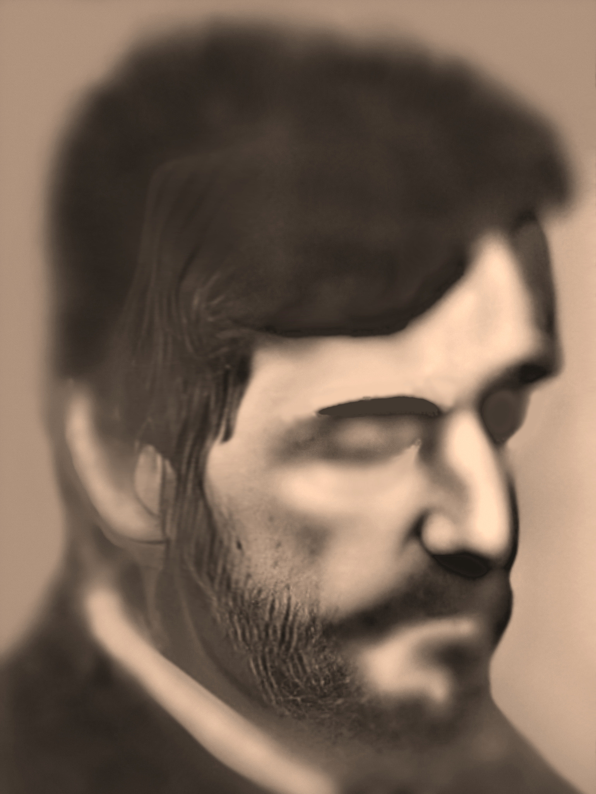

Дементий Павлович Полухин

Родился в 1894 г. в казацком селе Подтолстое Новосильского уезда Тульской губернии (ныне опустевшее урочище в Орловской области неподалёку от пос. Хомутово). Его родители, Павел Иванович и Аграфена Петровна, были крестьянами и потомками новосильских казаков, с давних пор обитавших в этой местности.
У Дементия было три брата: Андрей, Василий и Владимир, а также две сестры: Ксения и Прасковья.
В детстве Дементий окончил четыре класса церковно-приходской школы. Родители старались держать сыновей в строгости. Но Дементия это едва ли удерживало. Гулять ему нравилось куда больше, чем сидеть за партой. А потому, когда Дементию исполнилось 16, отец поспешил женить его на Александре Кожуховой, которая была на два года старше и жила в соседней д. Сухоголовище. Будущие супруги, вероятно, были зна-комы, так как часто посещали одну и ту же церковь. Молодая семья поселилась в соседнем хуторе Барыково. В том же доме поначалу жили и братья Дементия со своими семьями.
В браке с Александрой Дементий стал отцом одиннадцати детей, двое из которых умерли в младенчестве. Имена остальных: Федора (1913), Иван (1915), Алексей (1918), Николай (1922), Александра (1924), Евдокия (1928), Сергей (1931), Нина (1933) и Павел (1936).
В молодости, ещё до революции, Дементий отправился работать на угольных шахтах Донбасса. Вслед за этим в 1914 г. разразилась Первая мировая, а затем и Гражданская война, разлучившие Дементия с семьёй на долгие восемь лет. Впрочем, на побывку он иногда приходил, а потому дети у него рождались даже в этот период. Как позже Дементий рассказывал детям, на войне он никого не убил, так как боялся Бога.
Когда после Революции 1917 г. крестьянам разрешили выбирать себе земельные участки для обработки, Дементий и его братья, работая на молотилке для зерна, сумели сколотить крепкое хозяйство с дубовыми амбарами, в которых хранилось немало хлеба. Однако в 1928 г., когда в стране началась коллективизация, семье удалось избежать обычного для того времени раскулачивания и репрессий, так как, во-первых, их относили к середнякам, а не к кулакам, а во-вторых, поскольку Дементий и его родственники добровольно вступили в колхоз и отдали ему своё имущество. Так Дементий продолжил работать на своей же молотилке, только уже на колхоз. Как человеку грамотному и умелому, ему доверяли вести дела колхоза.
Дом Дементия Павловича редко пустовал. Своих гостей он зачастую угощал сам, так как умел готовить солонину, холодцы и прочие блюда. Когда четверо братьев собирались вместе, дом наполнялся казацкими песнями.
Привычный уклад в семье Дементия Павловича сохранялся примерно до 1938 г. Всё это время семья оставалась в Барыкове. Тем временем сельская жизнь становилась всё труднее. Лесов на Орловщине было немного, и дров на растопку зимой не хватало. Тем временем один из племянников Дементия – Сергей Андреевич (1908) – по распределению попал в Свердловскую область, где трудился агрономом. Вскоре он убедил всю большую семью Полухиных перебраться за Урал, в д. Голендухино, так как там, по его мнению, условия жизни были лучше. И, распродав всё имущество, семейство вскоре отправилось туда в поисках лучшей жизни. С собой Дементий и Александра забрали только младших детей, так как старшие дети, Федора и Иван, уже обзавелись своими семьями, а Алексей находился в ссылке.*
Надежды на лучшую жизнь за Уралом не оправдались. Леса там и правда хватало, но находился он на другом берегу, и рубить его было возможно лишь суровой уральской зимой, когда река была скована льдом. К тому же семью начали преследовать несчастья: сын Николай заболел туберкулёзом, младшая дочь Нина повредила позвоночник, а жена Дементия Павловича, Александра Ивановна, в 1940 г. умерла от дизентерии.
Вслед за этим Дементий Павлович занялся устройством личной жизни, так что шестеро детей временами были предоставлены сами себе. Вскоре Дементий Павлович выбрал себе в жёны бездетную женщину – Александру Григорьевну.
Зимой работы в деревне почти не было, поэтому Дементий Павлович время от времени выезжал в другие места на лесозаготовку, а после смерти жены решил отправиться в Донбасс, чтобы работать на шахте. Вместе с ним туда перебралась и вся семья, включая его новую жену.
Но покоя не было и там. Однажды в начале войны немцы из мести за убитого партизанами офицера прошли по окрестностям и собрали на расстрел сотню случайных прохожих. Среди них оказались Дементий Павлович и его сын, Николай. Немцы выстроили мужчин в шеренгу и начали беспорядочную стрельбу из автомата. Дементий Павлович догадался упасть в ров, не дожидаясь попадания пули, лёг под трупы и притворился мёртвым. Ночью он выбрался и вернулся домой. Чудом уцелел и Николай. Наутро Дементий Павлович решил бежать на Орловщину, где жила его старшая дочь Федора. Свою новую супругу, а также дочь Евдокию и других членов семьи он отправил туда ближайшим поездом, а сам с другими детьми – Николаем, Александрой, Сергеем и Павлом – отправился в путь на лошадиной упряжке. По пути они остановились на ночёвку в доме, в котором находился штаб советских войск. Ночью штаб попал под миномётный огонь. В результате обстрела Сергей и Павел, а также хозяйка дома погибли. Дементию Павловичу, Николаю и Александре чудом удалось уцелеть. Их, однако, взяли в плен и вскоре отправили в Германию. В плен с поля боя попал и старший сын Дементия Павловича, Иван.
Все четверо находились в разных местах и занимались подневольным трудом. Относительно спокойные условия были только у Николая, которому посчастливилось попасть к русскому хозяину. Остальные терпели издевательства и унижения. Но вернуться из плена удалось всем. Вторая жена Дементия, однако, не стала дожидаться мужа и вернулась на Урал.
Дементий Павлович оказался дома позже других родственников, попавших в плен. Всё дело в том, что в этот период он успел жениться в третий раз: на женщине с западной Украины. Однако вскоре он с ней расстался, и в декабре 1946 г. вернулся в Орловскую область. Там он наконец встретился с детьми и вместе с сыновьями, Николаем и Иваном, устроился работать на машинно-тракторную станцию колхоза. Первые месяцы были очень голодными, но уже через год семья была обеспечена хлебом. Спустя время Дементий Павлович всё же забрал третью жену к себе, поскольку боялся, что она может донести властям, что он был в плену. Супруги купили дом в соседнем селе Грязцы и поселились там вместе с дочерьми, Евдокией и Ниной. До последних лет жизни Дементий Павлович имел добротное хозяйство, держал коров, кур и прочую живность. Кроме того, имея стаж работы на шахте, он получал пенсию, так что семья была неплохо обеспечена.
В последние годы жизни Дементий Павлович просил у детей прощения за то, что порой мало уделял им внимания, занимаясь собственной жизнью. Впрочем, своим потомкам он всё же запомнился как человек добрый, хлебосольный, полный воли к жизни и способный начать всё с нуля.
Умер Дементий Павлович 23 декабря 1962 г. в с. Грязцы Орловской области в возрасте 68 лет.
* В 1937 г., когда Алексей проходил службу в армии, на него написали донос, из-за чего его на семь лет отправили в ссылку на монгольские урановые рудники как «врага народа». С началом войны он был призван на фронт в составе конвойного батальона. Был дважды ранен и даже имел награды. Однако, учитывая его уголовное прошлое, после освобождения Алексею не оставалось ничего, кроме как отправиться в Донбасс, в г. Енакиево. Там можно было относительно просто устроиться на работу на металлургический комбинат. Позже, в начале 50-х гг., в доме Алексея несколько лет жила его сестра, Евдокия.